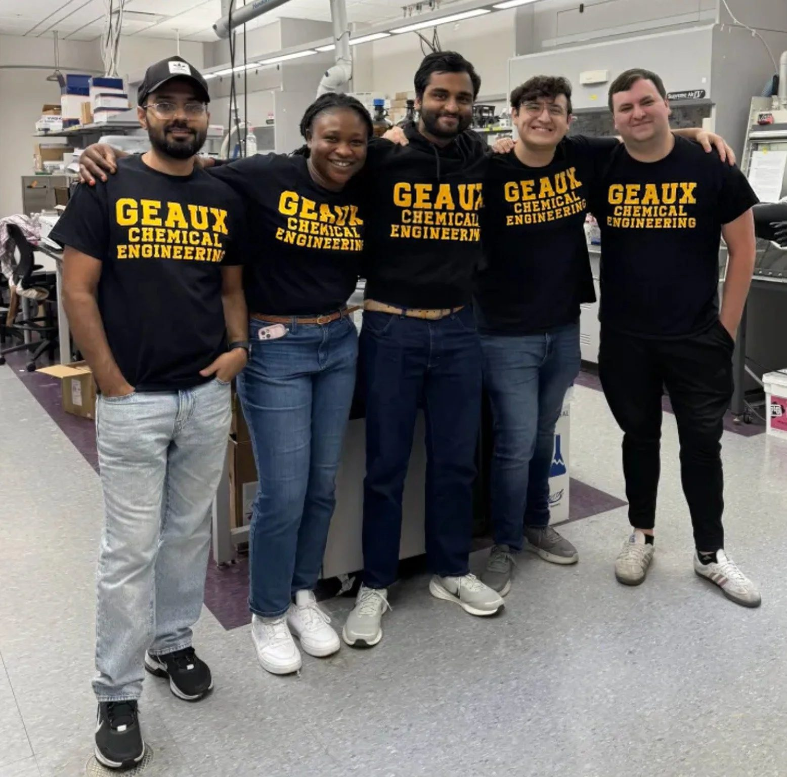
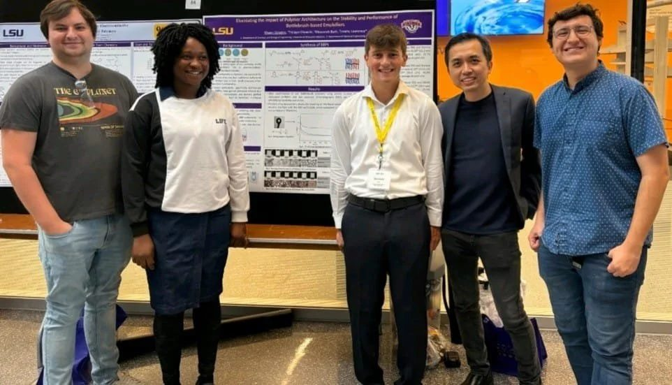
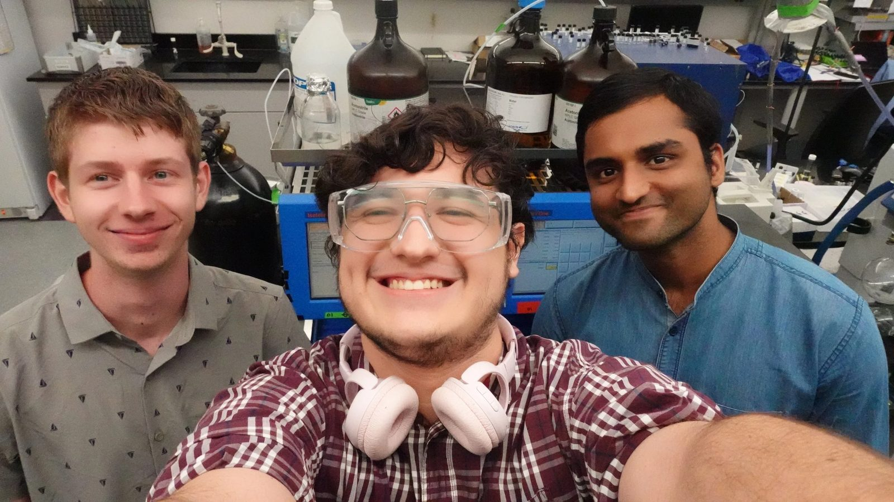
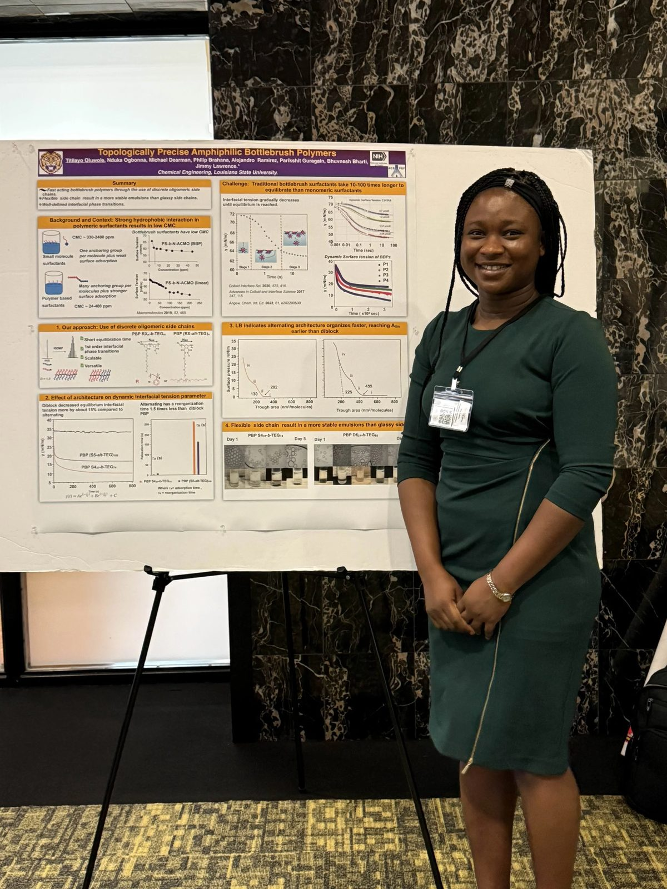
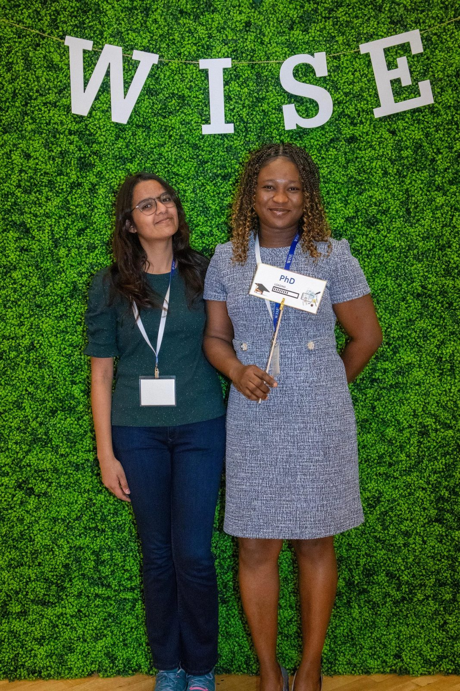
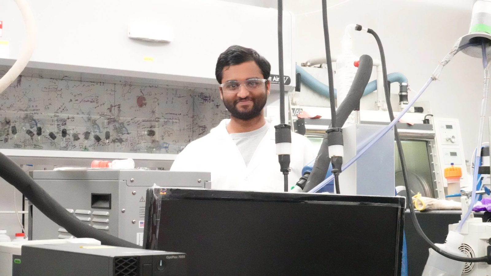
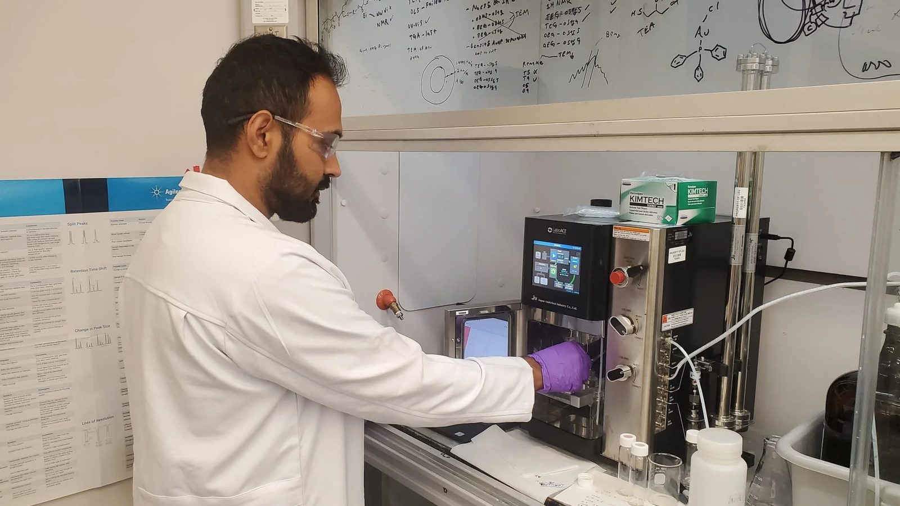
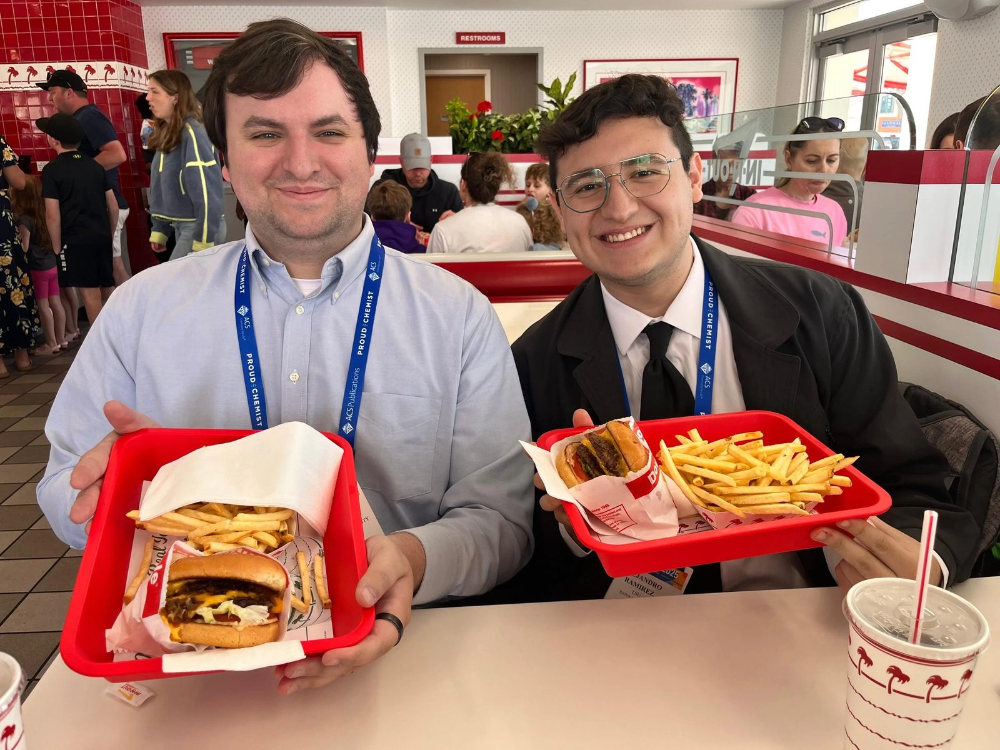
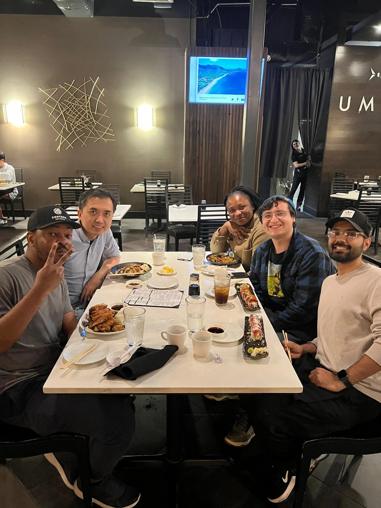

Jimmy Lawrence joined LSU in 2018. Before that he worked as a research engineer and scientist at Schlumberger in Japan and in Cambridge, Massachusetts. The group is funded by an NSF CAREER award and an NIH Maximizing Investigators' Research Award.
Joined 2026
Joined Fall 2022
BS Chemical Engineering, Ladoke Akintola University of Technology, Nigeria
Joined Spring 2024
BS Chemical Engineering, ITESO, Mexico
Joined Spring 2025
BS Chemical Engineering, Anna University, India
Joined Fall 2025
Joined Fall 2025
Joined Fall 2025







